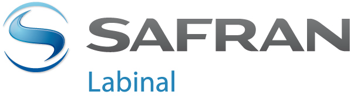
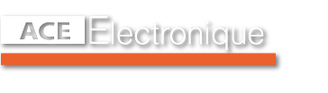
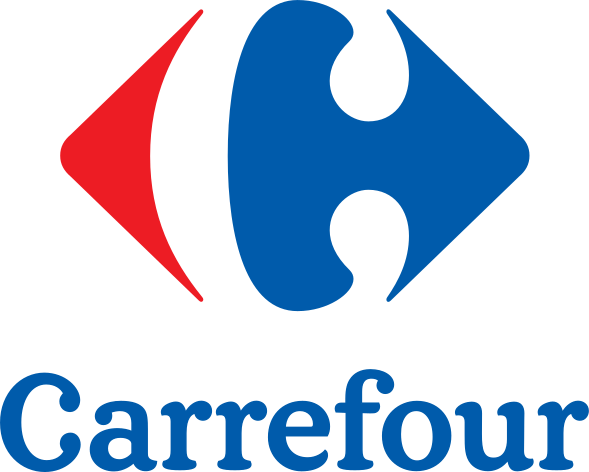
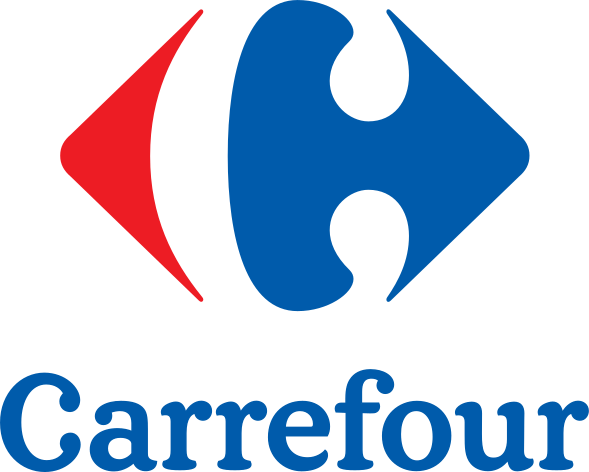
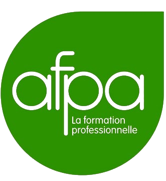
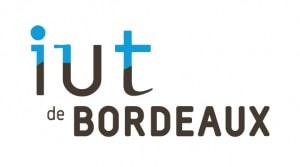

EXPERIENCES


Veille technologique et
employé libre service
2014 - 2017
Veille technologique
Maintenance de sites web
Création de tutoriel, salons, prospection
Autoformations
Dépannages
Missions ponctuelles
mise en rayon
inventaire
nettoyage
Auto-entrepreneur
2012-2014
Programmation informatique et dépannage
Dépannage système et matériel pour laptop et PC, conseil et assistanat clientèle
Créations de sites web :
Intégration de flash et de scripts de visite de propriétés via google map
Codage d’un thème sous Wordpress en suivant une maquette
Développement d’un projet d’étudiante en graphisme, avec enregistrement de données et affichage de statistiques
Construction d’un site élégant rendue simple grâce à des scripts jquery
Elaboration d’un backoffice permettant tarification et rédaction de news, intégration d’un agenda, mise en place d’un système d’enregistrement d’empreinte de carte bleue pour réserver une chambre
Création d'un site responsive calqué sur une maquette tierce fourni par le client
Auteur du tutoriel "algorithmique et php" pour débutant sur developpez.com
Maintenance de sites web :
Factorisation et reprise du code d’une association pour le rendre dynamique avec un hébergement limité en taille et des archives stockées en base de données
Ajout d’une page d’administration contenant un script de traitement de texte convertissant les données saisies en html
Créations d’applications :
Programmation d’une médiathèque inspirée par myvideosoft avec capture de données (textes et images) transparente sur le web et protection de logiciel
Développement d’un programme de génération de code et d’automatisation d’upload pour émission de radio lue sur winamp, afin de publier son podcast une fois enregistrée. Conception des icônes et du logo avec inkscape. Réalisation du mode d’emploi et publication sur youtube en anglais et en français. Empaquetage en programme exécutable auto extractible.
Leader Price, Géant Casino
Carrefour, Auchan
2010 - 2012
Employé libre service
mise en rayon, inventaire, nettoyage
 


Cordon Electronics
2008-2009

Opérateur d'atelier
Contrôleur de mobiles Nokia et HTC après dépannage
Utilisation de bancs d'essai
Réparation de Niveau 1
Développement d’un projet d’étudiante en graphisme, avec enregistrement de données et affichage de statistiques
Proposition de page intranet de comptage de poste à cordon electronics jugée intéressante mais déjà incluse dans un projet. Le projet mettant du temps à se réaliser, j’ai quand même utilisé ce compteur pendant un certain temps.
Labinal
2007
Stage de câbleur aéronautique
Observation
câblage et gainage sur table
Leader Price, Géant Casino
Carrefour, Auchan
2006
Employé libre service
mise en rayon, inventaire, nettoyage
transpalettes
ACE Electronique
2003
Technicien en électronique
Stage de technicien en électronique
Documentation
Diagnostique
Programmation de circuits intégrés
Utilisation de multimètres
Leader Price
2002
Employé libre service
Stage de mise en rayon
Facing
Nettoyage
Repérage
Inventaire
FORMATIONS
CESI
2017

Développeur Intégrateur Web / Mobile
Rigoureux : rédiger un cahier des charges avec un client. Le former. Faire des pages d'administration. Adapter un site web pour appareil ou écran. Présenter des projets. Répartir des tâches et les planifier. Faire de la veille technologique. Rédiger des articles. Utiliser des frameworks.
Certificat OpenClassrooms
2014

"Concevez votre site web avec PHP et MySQL"
Méthodique : Acquérir la notion d'objet et d'architecture MVC. Maîtriser les outils préconisés. Adapter mes acquis en C++ et algorithmique. Respecter conventions, normes et sécurité.
AFPA
2012

Technicien d'Assistance en Informatique
Altruiste : Adapter mon niveau de langage. Gérer et archiver des interventions. Utiliser des applications d'intervention à distance. Configurer le serveur d'un parc informatique. Installer plusieurs système d'exploitation sur un PC. Diagnostiquer et dépanner du matériel. Faire des sauvegardes. Habilitation éléctrique.
AFPA
2007
câbleur aéronautique
Manuel : Gainer des câbles blindés dans des avions. Utiliser des outils de dénudage et de soudage. Connaître la nomenclature. Tresser, sertir, et nouer.
AFPA
2004 - 2005
Niveau de Technicien supérieur en automatisme et informatique industrielle
Ingénieux : programmer des automates pour infrastructures ou systèmes de circulation. Relayer entrées / sorties vers des moteurs. Utiliser des logiciels de supervision et de modelisation.
Université Michel de
Montaigne
1998/2001
Niveau Deug LEA Anglais/Espagnol
Mobile et littéraire : Approfondir anglais et espagnol. Étudier civilisations espagnoles et anglais des affaires. Résumer en anglais avec un nombre de mots donné. Commenter des textes dans les deux langues. Traduire et interpréter. Acquérir et distinguer les termes américains et anglais. Voyager.
IUT
1997 - 1998

Génie électrique et informatique industrielle
Démonstratif : Étudier des mathématiques en électronique et électricité. Réaliser en binôme des circuits intégrés selon études et schémas à dessiner. Tester, observer et commenter des circuits et composants électroniques avec oscilloscopes et multimètres. Utiliser la documentation.
IUT
1995 - 1997
Génie informatique
Logique : Étudier des mathématiques de logique, faire des théorèmes logiques. Factoriser des formules logiques. Concevoir des algorithmes et les détailler. Approfondir les rudiments de la programmation. Maîtriser les langages essentiels. Analyser et structurer des données. Réaliser et documenter des projets. Étudier l'anglais technique et courant.
Lycée Pape Clément
1995

Bac S(ti)
Studieux : pratique de la programmation et réalisation de ma première application de bureau, qui aura été confirmée avec Universoft.